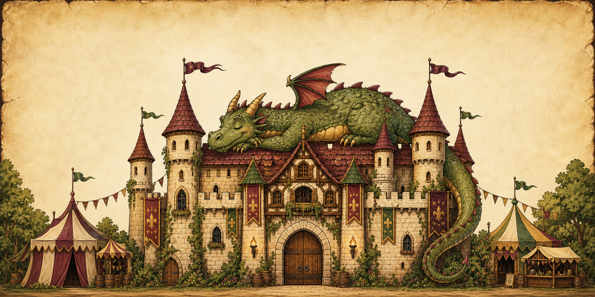

Realm Readiness
Peasant Mode--%

Hear ye, hear ye
Tracking cloak readiness, tavern rumors, and realm instability
--%
A bard has been spotted near the snack line.
The summer faire happened May 30. This is the fall encore: medieval chaos, goblins, tavern wenches, faire countdown. Sensible shoes recommended by exactly one responsible villager.